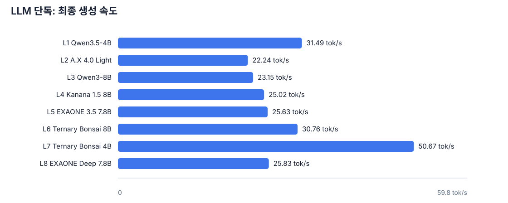
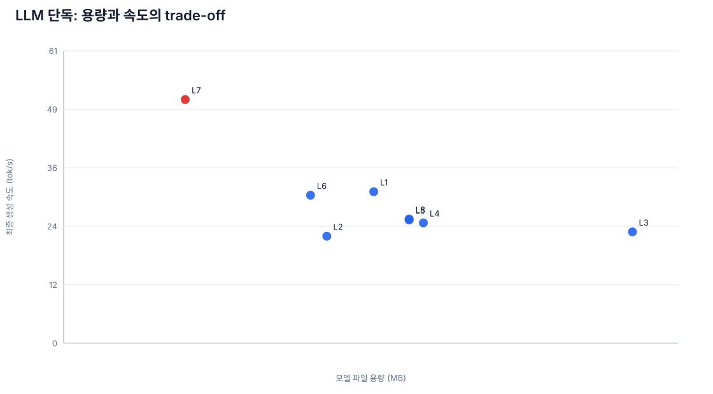
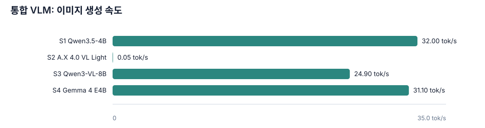
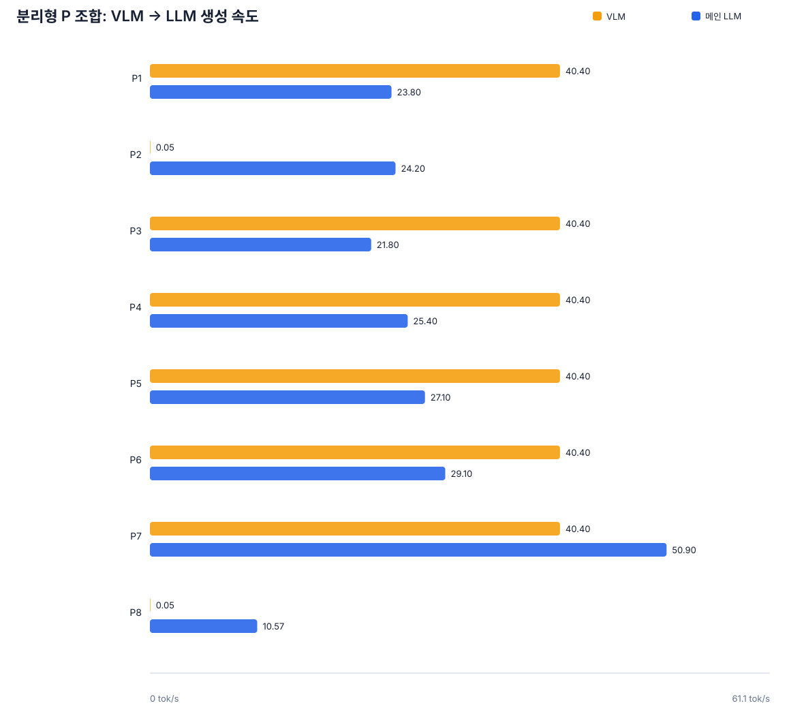
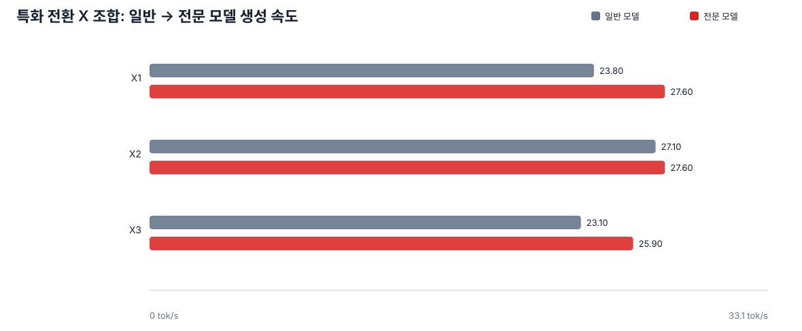
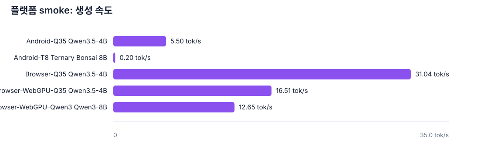

모든 행은 최소 1회 실행 증거입니다. 3 cold load·20 requests·20분 thermal gate는 별도 판정이며 현재 완료된 행이 아닙니다.
모든 조합이 Android 또는 브라우저 WebGPU에서 동작한다는 의미는 아닙니다. 플랫폼별 런타임·모델 아티팩트 가용성을 별도로 검증해야 합니다.






| ID | 모델/조합 | 구분 | 주 속도 tok/s | 보조 속도 tok/s | 용량 MB | Gate |
|---|---|---|---|---|---|---|
| L1 | Qwen3.5-4B | LLM 단독 | 31.49 | — | 2740.9 | incomplete |
| L2 | A.X 4.0 Light | LLM 단독 | 22.24 | — | 2326.1 | incomplete |
| L3 | Qwen3-8B | LLM 단독 | 23.15 | — | 5027.8 | incomplete |
| L4 | Kanana 1.5 8B | LLM 단독 | 25.02 | — | 3179.2 | incomplete |
| L5 | EXAONE 3.5 7.8B | LLM 단독 | 25.63 | — | 3053.9 | incomplete |
| L6 | Ternary Bonsai 8B | LLM 단독 | 30.76 | — | 2182.2 | incomplete |
| L7 | Ternary Bonsai 4B | LLM 단독 | 50.67 | — | 1075.0 | incomplete |
| L8 | EXAONE Deep 7.8B | LLM 단독 | 25.83 | — | 3053.9 | incomplete |
| S1 | Qwen3.5-4B | 통합 VLM | 32.00 | — | 3413.4 | incomplete |
| S2 | A.X 4.0 VL Light | 통합 VLM | 0.05 | — | 14667.0 | incomplete |
| S3 | Qwen3-VL-8B | 통합 VLM | 24.90 | — | 6186.8 | incomplete |
| S4 | Gemma 4 E4B | 통합 VLM | 31.10 | — | 5704.4 | incomplete |
| P1 | A.X Light + Qwen3-VL-4B | 분리형 P 조합 | 23.80 | 40.40 | 5659.6 | incomplete |
| P2 | A.X Light + A.X VL Light | 분리형 P 조합 | 24.20 | 0.05 | 17705.6 | incomplete |
| P3 | Qwen3-8B + Qwen3-VL-4B | 분리형 P 조합 | 21.80 | 40.40 | 8361.3 | incomplete |
| P4 | Kanana + Qwen3-VL-4B | 분리형 P 조합 | 25.40 | 40.40 | 6512.7 | incomplete |
| P5 | EXAONE 3.5 + Qwen3-VL-4B | 분리형 P 조합 | 27.10 | 40.40 | 6387.4 | incomplete |
| P6 | Ternary 8B + Qwen3-VL-4B | 분리형 P 조합 | 29.10 | 40.40 | 5515.7 | incomplete |
| P7 | Ternary 4B + Qwen3-VL-4B | 분리형 P 조합 | 50.90 | 40.40 | 4408.5 | incomplete |
| P8 | Qwen3-8B + A.X VL Light | 분리형 P 조합 | 10.57 | 0.05 | 20407.2 | incomplete |
| X1 | A.X Light → EXAONE Deep | 특화 전환 X 조합 | 27.60 | 23.80 | 5380.0 | incomplete |
| X2 | Kanana → EXAONE Deep | 특화 전환 X 조합 | 27.60 | 27.10 | 6233.0 | incomplete |
| X3 | Ternary 8B → EXAONE Deep | 특화 전환 X 조합 | 25.90 | 23.10 | 5236.1 | incomplete |
| Android-Q35 | Qwen3.5-4B | Android 에뮬레이터 | 5.50 | — | 1520.2 | incomplete |
| Android-T8 | Ternary Bonsai 8B | Android 에뮬레이터 | 0.20 | — | 2182.2 | incomplete |
| Browser-Q35 | Qwen3.5-4B | 로컬 브라우저 | 31.04 | — | 2740.9 | incomplete |
| Browser-WebGPU-Q35 | Qwen3.5-4B | 브라우저 WebGPU 직접 | 16.51 | — | — | incomplete |
| Browser-WebGPU-Q35-9B | Qwen3.5-9B | 브라우저 WebGPU 직접 | — | — | — | incomplete |
| Browser-WebGPU-Qwen3 | Qwen3-8B | 브라우저 WebGPU 직접 | 12.65 | — | — | incomplete |
tok/s는 생성 속도이며 품질 점수가 아닙니다. P 조합은 VLM 단계를 먼저 수행하는 handoff 구조라 VLM 생성 시간이 전체 지연을 지배할 수 있습니다. Android는 에뮬레이터 CLI smoke입니다. 브라우저는 localhost server 경로와 WebGPU 직접 경로를 구분해 기록했습니다. 기존 브라우저 속도 측정은 max_tokens=96으로 실행했으며, 이는 모델 제한이 아니라 테스트 설정입니다. 현재 테스트 페이지 기본값은 256입니다. WebGPU 결과는 cold/warm 각 1회만 측정했으므로 학생 기기 배포 전 반복·열 안정성 시험이 필요합니다. 품질·안전·한국어 자연스러움은 task catalog 기반 별도 채점이 필요합니다.